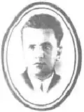

Микола ДУКИН
ДУКИН Микола Володимирович народився 21 грудня 1905 року в Балаклії на Харківщині в сім'ї дрібного крамаря. За довідкою Балакліївської сільради, виданою в березні 1938 року на вимогу судових органів після арешту Дукина батьки його були куркулями, мали ліс і луг, а також крамницю та найманих робітників. Усе це після революції було відібрано, але стало чи не головною причиною репресій проти письменника.
З дев'ятирічного віку Дукин навчався в Харкові, в комерційній школі, потім — у педагогічному технікумі. Якийсь час учителював на Ізюмщині, а 1928 року С.Пилипенко запросив його на редакційну роботу в журнал "Плуг". У 1932-1934 рр. секретарював у журналі "Критика", а далі, аж до арешту, займався літературною роботою. Художня спадщина Дукина невелика — десятків зо два оповідань, книжка прози для дітей "На машині, на моторі" (1932), книжка нарисів "Без протоптаних стежок" (1930) та кілька перекладних повістей і романів російських письменників. У матеріалах слідства вся ця спадщина кваліфікувалась як злочинна й антирадянська. У протоколи допитів стверджується, що Дукин не тільки з цим погоджувався, а й визнавав, що протягом усього життя був послідовним антирадянцем: "Як виходець із буржуазної сім'ї почав свою антирадянську націоналістичну діяльність ще в 1921 році... В 1922 році почав учитися в Харківському педтехнікумі, де лютували запеклі націоналісти Вишиваний, Шамрай та ін... Мої натхненники — Пилипенко, Кириленко, Панів і Божко... У "Плузі" почав писати свої націоналістичні новели... Такою новелою були "Пасинки степу", "На аванпостах"... у збірнику "Матіола" те саме, про що писав націоналіст Хвильовий... По-шкідницьки переклав романи "Пушкін" Ю.Тинянова, "Бруски" Панфьорова, "Як гартувалася сталь" М.Островського..." Таку ж нісенітницю про творчість цього письменника повторювали й "свідки" з літературного середовища. Та вже через півроку слідства, 9 лютого 1939 року, Дукин відкинув усі попередні "зізнання": "Факти... мною вигадані для обмови себе... Про те, що існує серед письменників підпільна організація, не знаю...". Незважаючи на плутанину в слідчих матеріалах, справу Дукина було передано на розгляд особливої наради при НКВС. За постановою цього позасудового органу від 29 жовтня 1939 року Дукин був відправлений у табір строком на 5 років "за участь в антирадянській націоналістичній організації". За свідченням табірної адміністрації, помер 10 жовтня 1943 року від легеневої хвороби (відкритий туберкульоз). Питання про реабілітацію Миколи Дукина порушили 1956 року дочка письменника Наталка, а також Спілка письменників України. Характеристику М.Дукину, надіслану Прокуророві УРСР 15 жовтня 1956 року, підписали О.Гончар, Ю.Смолич, Л.Новиченко. Свідками під час перегляду справи виступали І.Муратов, А.Головко, В.Минко, Т.Масенко, Л.Юхвід, Я.Гримайло, М.Черняков. У постанові президії Харківського обласного суду від 22 листопада 1957 року зазначалося: "Постановление особого совещания при НКВД СССР от 29 октября 1939г. отменить и дело прекратить из-за отсутствия состава преступления." Микола Дукин реабілітований посмертно. ЛУ 31(4440) 1.08.1991